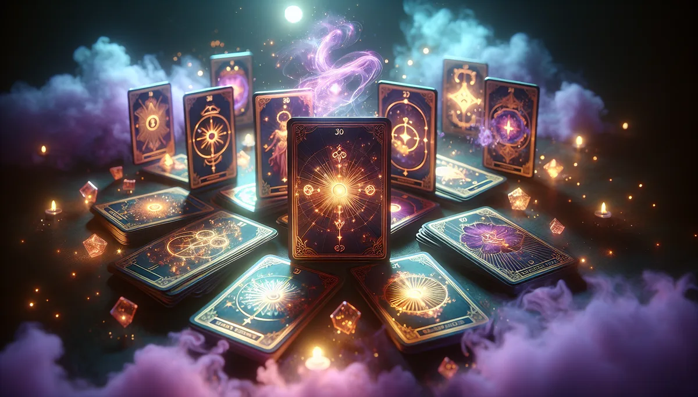

正在洗牌中⋯⋯

22張大秘儀 × 56張小秘儀 × 正逆位雙色視覺 × 3D翻牌動畫
馥靈之鑰線上塔羅牌提供 78 張完整塔羅免費抽牌，包含 22 張大秘儀與 56 張小秘儀，支援正逆位與 1 至 12 張多種牌陣選擇。正位以金色暖光呈現，逆位以紫色冷調區隔，搭配 3D 翻牌動畫與牌陣位置命名，讓每次抽牌都有儀式感。抽牌完全免費、不限次數，不需要註冊也能使用。想要更深入的分析，可以搭配馥靈之鑰 130 張原創智慧牌卡的 AI 即時解讀。
牌陣：過去｜現在｜未來
靜下心來，想著您最想問的那個問題
準備好了，就點「開始抽牌」
什麼是馥靈之鑰？
馥靈之鑰（Hour Light）是台灣原創的自我認知優化平台，整合33大命理系統、130張原創智慧牌卡、101+心理測驗。透過H.O.U.R.四階段覺察系統與認知芳療，幫助每個人讀懂自己、活對人生。所有工具免費線上使用。